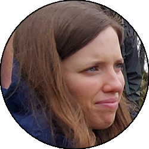
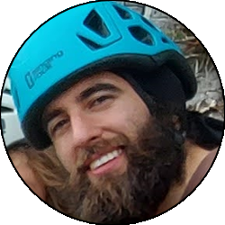

Relazione
| Data Uscita | 01-05-2023, Lunedì | Area | Resegone |
|---|---|---|---|
| Luogo di Partenza | Piazzale Funivia Piani d'Erna - Lecco (LC) | Quota |
590m la partenza 1302m la cima del Fo 1231m il Magnodeno |
| Dislivello | 800m (circa) | Tempi | 05:00 ore |
| Esposizione | Varie, per lo più Nord-Ovest | Difficoltà Tecnica | T3 |
| Punti di Appoggio | Capanna Ghislandi, Bivacco Magnodeno | Acqua | Incrocio di vari fiumi durante l'avvicinamento (principale il Bione), sorgente alla fine della Giumenta e sulla discesa |
| Partecipanti |
 Alice,
 Luca,
 Maraja, Maraja,
 Oracolo Oracolo
|
||
(clicca sull'immagine per scarica la traccia GPS)
Accesso
Da Lecco salire fino al quartiere di Acquate e imboccare la strada che con numerosi tornanti porta fino al piazzale della funivia di Erna. Parcheggio a pagamento (3€ la giornata).
Giro
Scendere dietro agli impianti con qualche facile roccetta e portarsi sulla strada asfaltata che seguita verso destra porta fino a Deviscio. Seguire ora il largo sentiero che parte a sinistra, che salendo arriva fino ai bei prati del piccolo nucleo di Costa. Proseguire a destra al bivio e a sinistra a quello dopo (nei pressi di un abbeveratoio), proseguendo fino alle case sparse di Costa Alta. Da qui bisogna seguire il sentiero che continua a salire a destra delle case, attraversa il torrente Bione, e prosegue in salita nel bosco (attenzione a non prendere deviazioni, no cartelli! Seguire il sentiero principale). Se non si ha sbagliato si arriva a un ulteriore trivio dove un piccolo cartello in legno indica il passo del Fo a destra, e si segue questo sentiero (ora senza possibilità di errore) che sale gradualmente fino a una forcella, poi prosegue nel bosco fino ad arrivare al passo del Fo dove sorge la capanna sociale Ghislandi.
A questo punto costeggiare la capanna e proseguire sul comodo sentiero alla sua sinistra, che rapidamente porta sulla cresta della Giumenta. Seguire il sentiero e le catene (un caminetto verticale più impegnativo di può evitare sulla sinistra), passando nella prima parte sul pulpito panoramico della cima del Fo (croce), anch'essa evitabile volendo. Proseguendo la cresta diventa l'unico sentiero, ma le difficoltà si abbassano, soltanto qualche roccetta di saliscendi sempre ben protetta a catene. Proseguire lungamente sulla cresta sempre panoramica fino a dove diventa più sentiero, e infine entra in un boschetto dove si trova una sorgente con panchina, punto dove la cresta della Giumenta si può considerare finita. Proseguire ora in falsopiano fino alla selletta a Nord-Est della cima del Magnodeno, dove seguendo il sentiero con qualche gradone con catena nell'ultimo tratto, porta sulla comoda e panoramica cima della montagna.
Tornare sui propri passi fino alla sella dove si è giunti finita la cresta, e prendere il sentiero (indicazioni Rifugio Stoppani) che segue la dorsale, inizialmente panoramica, poi che si sposta a destra verso il bosco, e porta gradualmente a perdere dislivello fino a entrare nei boschi tra Magnodeno e Pizzo d'Erna. Seguire sempre il sentiero più evidente (a volte ci sono i cartelli che indicano sempre il Rifugio Stoppani) e se non si sbaglia ci si trova ad attraversare ancora una volta il torrente Bione e sbucare appena sopra la frazione di Costa, nel punto dove all'andata si era preso il sentiero di sinsitra. Seguire ora il sentiero dell'andata fino all'asfalto, e con una piccola risalita tornare al piazzale della funivia.